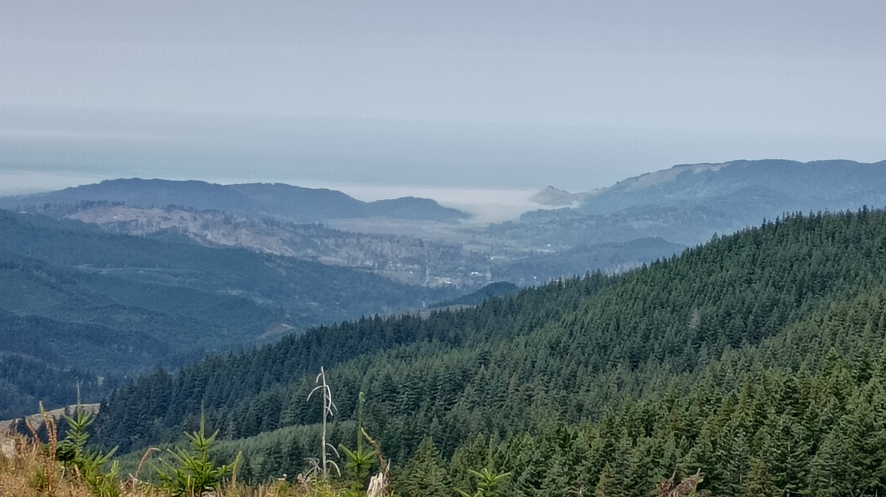

ope...a life andare.1
Went for a 200 mile ride today - up 101, over the Coastal Range, up through the Coastal Range, back over the Coastal Range, then down the coast to home. Lots of fun riding and pretty scenery.
Up over Oregon Route 6 is one of my favorite rides over the Coastal Range. Well, I lie a little here, they're all my favorite, but they're all favorites for different reasons. Hwy 6 is my favorite because I can hustle through the twists and uneven roads better than most anything on four wheels, so when I ride it on a weekend during the summer with all the tourists heading to and from the coast there's lots of passing to be had.
Vroom.
Today I caught up to a loaded down (lots of luggage on the pillion seat and sissy bar)Harley Softail (not sure which). Woo! They were hustling that cruiser through the curves and around cars like nobody's business.
I used to have a Victory Boardwalk, so I have an appreciation for how they were handling their bike.
I was enjoying their riding so much I tucked in behind them and watched the show. They'd stand (must've had mid-controls, not forwards) over the worst of the uneven broken pavement and around curves without slowing; all the more impressive knowing they must've had only three(ish) inches of suspension travel (to my eight). And their lean angle? On a Harley like that? Almost nonexistent, and it slowed them down very little.
Eventually I had to get off 6 to continue my little trip. I caught up with them, threw a shaka, and went on my way.
And Mabel? Continues to impress. Oodles of ground clearance. Gobs of lean angle. Cruises around politely and hustles with a flick of the throttle.
Nice day. Cool and windy on the coast. Excessive heat warning in the valley for today and tomorrow. Lots of traffic; folk trying to escape the heat. Here's where I turned around right outside of Florence, OR, home of the exploding whale and the inspiration for Herbert's Dune.
Thought I'd celebrate today by riding into the Coastal Range and cracking a rib. Mission accomplished.
Riding off pavement is tough. You have to sit differently. Lean the bike differently. Stand occasionally. Let the motorcycle slip and slide underneath you.
Last week I dropped Mabel four times, every one of them on a little side trail I've nicknamed Matt's Bane.
The good news about dropping a bike off pavement is you're generally going slower than street speeds and gravel and dirt is softer (and less road rashy) than pavement.
The bad news about dropping a bike off pavement is you're generally on a slippery uneven surface which makes footing and leverage a challenge.
I dropped Mabel about half way up a hill climb. Picking up a 458 pound motorcycle on a dirt hill is tricky. Picking her up on the same hill three more times while trying to get down is even trickier. Bruised the arm and leg a bit.
This week I thought I'd go back and try again.
Yeah.
Every time you hear someone say how smart librarians are remember this story.
So I went back down Matt's Bane. Then went back down on Matt's Bane. Made it even less far this time. When I went down my left arm got pinned to my side. I landed on it. Mabel landed on me. I heard a crack.
Job #1? Turn Mabel off. Job #2? Get out from under the 458 pound motorcycle. Job #3? Stay on hands and knees while determining what the crack was. Wrist? OK. Arm? OK. Elbow? OK. Shoulder? OK. Knee? Leg? Ankle? All OK. Clavicle? Okey dokey.
Oh, look at that, breathing hurts. You know, a skosh. Breathing isn't supposed to hurt.
Stay on hands and knees for a couple minutes while I contemplate taking up macramé.
Remember I've never been any good at knots. Drat. Try not to throw up. Check.
Pain isn't sharp. Yay! Breathing mostly okay. Yay! Manage to stand up. Yay! Pick up bike. Yay! Turn bike around on hill without dropping her again. Yay!
I get back to the main trail - cuz fuck Matt's Bane, yo - and decide...yeah...to keep going further instead of turning back home.
Not three minutes later I get to a clearing with a view all the way to the ocean.
This is why I'm riding off pavement!

The pic above was taken with a not-so-great phone. There's Cascade Head on the right. A little to the left is God's Thumb. The thick white(ish) strip along the top of the picture is the sky. The darker gray strip beneath that is the ocean. The thin white strip going from God's thumb across the pic is a fogged in Linclon City. The rest is the Coastal Range.
I also got a video or two that turned out even worse. I hope to get back up there tomorrow after work with a better camera.
Yeah. Tomorrow.
Librarian.
As I sit here in a comfy chair hopped up on Tylenol typing all this out I wonder if riding off pavement is worth it. I mean, I can get pictures and videos that look like this from the pavement for goodness sake.
I'll see if my courage (and pain management) holds for tomorrow.